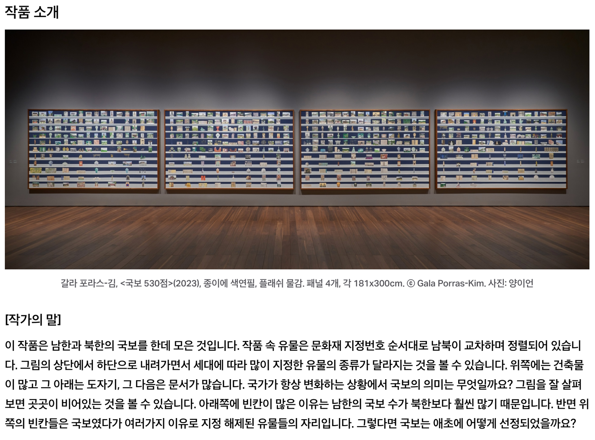
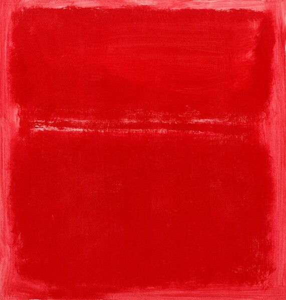
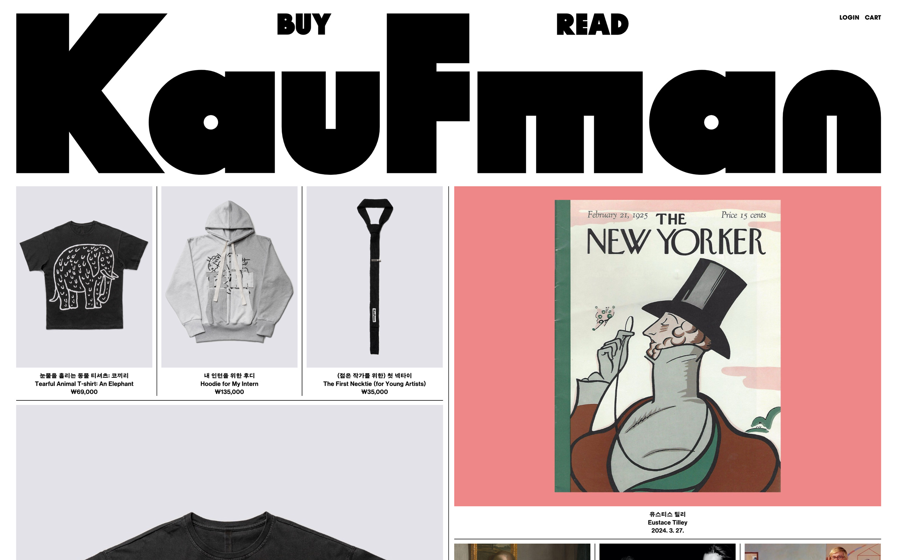

전시 보러 갈래? - 김형진과 함께 1
<1. 스캔하는 사람, 김형진
2. 작가의 말
3. 미술 제도라는 생태계
4. 참다운 직업인, 김형진
.
.
.
.
.
.
.
.
.
.
.
.
.
.
.
.
.
.
.
.
.
.
.
.
.
.
.
.
.
.
1. 스캔하는 사람, 김형진
김형진: 작업하는 입장에 있는 분들은 전시에서 무엇을 보시나요? 아무래도 저는 입장이 다르다 보니 질문드리고 싶었어요.
재훈: 작품을 보죠. 우선 전시 소식을 인스타그램이나 아트바바에서 보고, 관심 생기면 실제로 가서 보고, 호기심이 생기면 작가 인터뷰나 자료들 찾아 보고, 더 관심 생기면 책 사고 그렇죠. 그건 그렇고 오늘 디자이너님이 전시 보시는 속도를 보며 생각한 건데요.
일반 관객들이 전시장에서 하나의 작품을 바라보는 평균 시간이 17초라고 하더라고요. 근데 디자이너님은 한 작품당 0.7초씩 보는 것 같다는 생각이 들었어요. 유유자적 엄청 빨리 지나가셨잖아요. (웃음) 전에 하신 인터뷰에서 ‘디자인할 책의 내용을 볼 때에는 스캔하듯이 볼 수밖에 없다.’라고 말씀하셨는데 전시도 그런 식으로 보시는 건가 싶었어요.
김형진: ‘이 사람 제대로 섭외한 걸까?’라는 생각을 하실 것 같은데. (웃음)
재훈: 조금 불길하긴 했어요. 하하! (눈물) 도록 디자인을 맡게 된 전시를 볼 때도 그렇게 보시나요?
김형진: 그럴 수밖에 없어요. 재훈 씨는 전시에서 작품을 보신다고 하셨는데 저는 작품을 안 보거든요. 작품보다는 세팅을 보는 편이에요. 나름대로는 이유가 있어요. 우선 저에게 작품이란 어떤 감정을 불러일으키는 매개체라기 보단 여러 정보를 담은 인덱스 덩어리에 가깝기 때문이에요. 이건 아마 제가 미술사를 공부하는 과정에서 익히게 된 습관인 것 같아요. 작품이란 특정한 정보가 집적된 덩어리일 뿐이고 전시장에서의 관람이란 이를 확인하는 절차에 불과하게 되는 거죠.
재훈: 왜 그런 접근에서부터 시작되는 건가요?
김형진: 작품을 볼 때 작가의 생애나 작품에 얽힌 뒷이야기 등에 관심을 두려고 하지 않는 편이에요. 물론 그런 것들이 재밌긴 하지만, 너무 손쉬운 접근이라는 느낌도 들고요. 작품이란 내 눈앞에 놓여진 갖가지 조형 요소들의 집합일 뿐 누군가의 개인사나 감정이 투여된 결과로 보지 않으려고 노력하는 거죠. A라는 작품에 대해서는 작품 이외의 부가 정보가 풍부하고 B라는 작품은 그렇지 않다고 한다면, 필연적으로 사람들은 A라는 작품에 더 애착을 가질 수밖에 없죠. 이해할 수 있거든요. 그런데 이런 방식이 맞나, 그런 생각을 할 수밖에 없어요.
부분적으로는 제가 감정적으로 풍부한 관람자가 아니기 때문이기도 해요. 20대 때 미술관과 박물관들을 돌아다니면서 제가 느낀 건 고작 ‘이건 생각보다 크네', ‘이건 생각보다 더 파랗군', 뭐 이런 정도였어요. 거의 단 한 번도 감정적으로 나를 움직이는 작품을 마주친 적이 없었어요. 물론 미술이라는 게 태생적으로 음악 등에 비해 덜 감정적인 매체인 것도 맞고요.
디자이너가 된 후에도 작품에 대한 접근 자체는 크게 바뀌지 않더라고요. 디자이너로서 저에게 중요한 건 실제 작품과 인쇄 재현물 사이의 갭을 어떻게 하면 줄일까 하는 기술적 문제들이거나, 3차원 공간에 놓인 작품들을 어떻게 하면 효과적으로 2차원 종이 위로 옮겨 놓을까 같은 문제일 뿐이에요. 작품이 얼마나 의미있나는 제 관심사가 아니에요.
재훈: 인간 스캐너 같으세요. (웃음)
김형진: 맞아요. 말 그대로 주마간산으로 봐요. 사실상 본다는 말보다 ‘스캔한다’라고 표현하는 게 맞을 것 같아요. 제가 전시를 보는 이유는 제가 가진 정보들을 확인하는 과정에 가까워요. ‘이 작품의 실제 스케일감이 어떻구나’ 라던가 ‘이 작품과 저 작품 간의 관계를 이렇게 맺어놨구나’, ‘기획자들이 가장 하이라이트로 생각하고 있는 건 이 작품이구나'와 같은 정보들을요. 기능적이고 무미건조한 관람객인 셈이죠.
재훈: 그럼 기획자가 설정한 전시의 의미를 의심해 보거나, 어떤 작품을 하이라이트로 설정한 이유에 대해 반박하고 싶은 마음은 안 드시나요?
김형진: 그것은 작가가 할 일이죠. 전 디자이너잖아요. 물론 기획자의 해석이나 번역이 고루하거나 관성적인 경우도 있죠. 특히 책이라는 매체에 대해서는 더더욱 그런 경우가 많고요. 그건 어쩌면 당연한 일이기도 해요. 큐레이터가 책 전문가일 필요는 없으니까요. 그렇기 때문에 디자이너가 필요한 것일 테고요. 그리고 디자이너들은 적절한 상상을 위해 전시장을 찾는 거죠.
결국 디자이너 입장에서 좋은 작업, 나쁜 작업을 나누는 기준은 작가나 기획자의 그것과 다를 수밖에 없어요. 저에겐 책의 페이지 위에서 시각적으로 얼마나 매력적이냐 아니냐가 중요할 뿐이거든요. 작품이 얼마나 심오하냐, 아니냐는 제 관심 밖이에요. 하지만 한 명의 관람자로서 별로 끌리지 않는 작품들은 있죠. 굳이 설명해 보자면, 너무 쉽게 언어화되는 작업들엔 별로 끌리지 않는 편이에요. 그냥 정리된 문장 같은 작업들이요. 이럴 거면 굳이 왜 작품을 만들까, 그냥 말로 하는 게 쉬울 텐데, 라는 생각이 드니까요. 다행인 건 그런 작업이 많은 것 같진 않아요.
2. 작가의 말
김형진: 전시 도록에 보면 ‘작가의 말’이 실린 경우들이 있잖아요. 저는 ‘작가의 말’이 되게 재미있는 장치라고 생각해요. 작품을 이해하기 위해서 ‘작가의 말’을 보기도 하고, 그걸 읽고 나면 마치 작품에 대해서 이해한 것처럼 느껴지기도 하잖아요. 그런데 저는 그곳에 분명히 커다란 함정이 있다고 생각하는 편이에요.
생각해 보세요. 미술에 있어 ‘작가의 말’이라는 건 고생고생해서 영화 한 편을 만들어 낸 영화 감독에게 ‘춤으로 이 영화를 해석해 주세요.’라고 요구하는 것과 무척 비슷하다고 느껴지지 않나요? 기껏해서 비언어적인 매체로 작업을 해놨는데 그걸 말로 설명해 달라고 하는 게. 물론 설명을 듣지 않으면 이해의 첫 문턱을 넘기도 어려운 작품들이 부지기수니 이해 못 할 바는 아니지만, 아무튼 다소 어색한 장치임은 틀림없다고 생각해요.
어떤 작가는 이를 통해 아무 말이나 하기도 하고, 또 다른 작가는 정말 성실하게 자신의 작품을 설명하는 경우도 있는데, 사실 후자가 더 난감해 보여요. 설명하면 할수록 작품이 쪼그라들곤 하니까요. 그렇다고 모든 작가가 앤디 워홀처럼 똑똑하거나 위악스러울 순 없을 테고요. 오늘 전시 보러 오는 길에 《갈라 포라스-김: 국보》가 어떤 전시인지 봐보려고 핸드폰으로 찾아봤었거든요. 보니까 작품 사진이 3개 있고 그 밑에 작가의 말이 하나씩 쓰여 있더라고요. 보면서 “잘 모르겠다.” 생각하며 왔어요.

재훈: ‘인덱스로서의 작품’에 대해서 조금 더 이야기해 주실 수 있을까요?
김형진: 말씀드린 것처럼 제가 작품을 인덱스로 보는 습관은 디자이너로서 익힌 기능적이고 기술적인 태도일 뿐이에요.
재훈: 직업적인 필요성이 왜 그렇게 설정되었나요?
김형진: 도록을 만들기 전에 페이지네이션을 짜요. 도록의 첫 페이지부터 마지막 페이지까지의 구성을 잡는 일인데, 이를 위해 작품들 간의 관계를 이해하는 게 필요해요. 아주 단순하게는 전시장 입구에 걸린 작품이 뭔지, 이 작품 다음에 어떤 작품이 배치되어 있는지부터 시작하죠.
재훈: 디스플레이 같은 걸 말씀하시나요?
김형진: 맞아요. 그리고 도록엔 항상 공간에서보다 더 많은 글들이 포함되기 마련인데, 글과 작품 사이의 관계에 대해서 고민할 때도 결국엔 마찬가지 과정을 거치게 돼요. 글을 책의 맨 앞 혹은 맨 뒤에 놓을지, 아니면 가운데 어디쯤에 놓을지를 결정할 때도 결국 작품들에 대한 일목요연한 파악이 필요해요.
재훈: ... 들으면서 작품 감상에 대한 관점이 저와 정말 다르다고 생각했어요. 저는 작품을 보면서 관객이 무얼 봤는지, 보면서 어떤 것을 느꼈는지가 중요하고, 좋은 작품은 관객에게 감정을 일으켜야 한다고 생각하는 편이에요. 근데 개인의 감상이라는 게 굉장히 내밀한 영역이잖아요. 예를 들어 제가 이 오렌지 주스의 맛이 어땠는지 말하지 않으면 다른 사람들에게 이 오렌지 주스는 그냥 ‘평범한 오렌지 주스네.’라고 인식되고 끝나버릴 문제니까.
그렇기 때문에 개인의 감상, 즉 '나와 작품과의 관계'가 작품에 대한 해석을 넓힐 수 있다고 생각해요. 그곳을 다른 사람과 함께 공유할 수 있을 때 기쁘고 좋고요. 근데 디자이너님은 작품을 안 본다고 하시니까... 당황스럽기도 하고, 열심히 보는 것이 좋은 일이라는 제 가치관도 불현듯 흔들리고 그러네요.
‘작품을 둘러싼 인덱스’란 말을 생각했을 때 제게 떠오른 건 전시 서문이나 작품에 대한 설명 글, 특정 개념어들로만 돌림 노래하는 비평 글 등 작품에 대한 감상을 안내하는 장치들인데요. 이러한 인덱스의 다양성이 없기 때문에 작품과 관객 사이의 관계가 일률적으로 매개되고 관객들의 전시 경험이 평평해진다고 생각해요.
가령 똑같은 공간에서 연이어 열린 두 개의 전시가 있다고 한다면, A라는 전시를 봤을 때의 경험과 B라는 전시를 봤을 때의 경험이 크게 다르지 않은 거죠. 각 전시를 이루는 작품의 성격이 판이하지만 이 작품들을 ‘어떻게 보여줘야겠다’라는 접근, 다른 말로 인터페이스가 크게 다르지 않으니까요. 그런 방식으로 적당히 학구적이거나 적당히 시적인 텍스트를 쓰는 것이 부질없는 일이라고도 생각해요.
김형진: 텍스트를 쓰는 것이 왜 부질없어요?
재훈: 작품을 만드는 일로써 이미 가장 중요한 발언을 한 거잖아요.
김형진: 그렇긴 하죠. 하지만 작품에 대한 글을 쓰는 게 무의미한 건 아니에요. 어떤 작가들은 작품보다 글이 더 좋은 경우들도 있고 하니까. 그리고 앞서 말한 제 말들은 순전히 제 방식일 뿐 보편적으로 옳은 것도 아니니까요. 작품을 열심히 보거나, 거기에서 어떤 감정적 동요를 느끼고 그에 대해 글을 쓰거나 하는 건 다 나름의 가치가 있겠죠.
조금 다른 얘긴데, 저는 미술이나, 드라마나, 영화나 음악이나 혹은 음식이나 어떤 면에선 엇비슷한 생산물이라는 생각이 들어요. 내가 만들지 않은 것을 보거나 듣거나 먹는다는 점에서요. 이중 영화나 음악 같은 매체는 무척이나 감정적인 매체인 데 반해 미술은 완전히 비감정적이라는 차이가 있긴 하지만요. 미술은 기본적으로 건조한 생산물이에요.
재훈: 현대미술이 특히 더 그렇죠.
김형진: 그렇지 않다고 주장하는 쪽에서 몇몇 사례들을 들면서 이에 반박하기도 하죠. 항상 똑같은 예들이긴 하지만. 예를 들어 ‘마크 로스코의 작품을 보면서 눈물을 흘렸다.’

©The Mark Rothko Foundation, Inc.
또 미술을 보면서 아무런 감정적 동요가 없다는 데에 가벼운 죄책감을 가지는 사람들도 있죠. 내가 교양이 부족한가, 하고요. 근데 저는 미술이 원래 그런 매체라고 생각하는 편이에요.
재훈: 왜 ‘원래 그런 매체다’라고 생각하세요? ‘최근의 미술이 그렇다’라고 볼 수도 있지 않나요?
김형진: 저는 옛날에도 마찬가지였다고 생각해요. 종교미술의 경우 격정을 불러일으키는 경우가 종종 있었겠지만 그건 미술에 대한 것이 아니고 신앙심이 깊어서였을 테고요.
정아: 저도 미술이 감정적인 매체가 아니라는 것에는 동의해요. 저는 미술이 감정보다는 기획에 가깝다고 생각해요. 그리고 재훈 님이 앞에서 말씀하신 '부질없음'이 궁금한데 조금 더 설명해 주실 수 있으세요? 작품이 생산된 후 비평이 이루어지는 일이 부질없다는 것인지, 아니라면 어떤 맥락에서 부질없음을 느끼신 건지 궁금해요.
재훈: 일단 ‘미술 작품에 대한 반응으로서의 감정’부터 이야기할게요. 제가 말한 감정이라는 건 막 슬퍼서 눈물을 흘리거나 전율이 일어서 심장마비가 오는 게 아니라요. 그냥 보고 나면 “와~ 좋다. 정말 좋다.” 이런 거예요.
김형진: 그럴 수 있죠. 너무너무 멋있다, 그런 건 당연히 있죠.
재훈: 부질없다는 말은 비평 행위 자체를 향해 한 게 아니에요. 작품이 있고, 그것에 대한 반응으로서 비평 글이 생산되고, 그 비평이 또 다른 플레이어들한테 긍정적인 자극을 주는 순환은 건강한 생태계라면 당연히 이루어져야 한다고 생각해요. 문제는 어떤 작가가 있고 그 작가의 작업이나 작업 세계가 특정 주제어나 개념어로 표제화됐을 때, 관객들이 그 작가의 작품을 본 뒤 하게 되는 일이란 게 그 표제어를 반복해서 발음하거나 고개를 끄덕이는 것에서 멈추는 현상이죠.1
근데 소식들을 보면 볼수록 이러한 분위기가 심각하다는 걸 체감하게 돼요. 가령 웹진 ‘abs’에서 발행한 노혜리 작가와의 인터뷰2를 보면 작가가 미국에서 대학원을 다녔던 시절 이야기가 나오는데요. 한국인 유학생이나 한국계 미국인 작가들의 경우 그들의 작업에 포함된 요소들을 문화적 코드, 그러니까 한국적 정체성을 함의하는 상징이나 기호로써 읽어내는 게 주류적인 분위기라고 하더라고요. “지원서나 아티스트 스테이트먼트를 쓸 때도 ‘너무 노골적이다, 작가가 이렇게까지 직접적인 언어로 작업을 설명해야 한다니’와 같은 느낌을 받을 정도로 작성해야 하는 경우들이 많다”는 말도 기억에 남고요.
제가 부질없다고 생각하는 건 ‘작가의 말’이라는 장치가 연구 논문 초록이나 프레젠테이션 대본처럼 획일화된 방식으로 쓰이는 현재의 분위기예요. 말은 휘황찬란하고 있어 보이지만 실제로 전시장에 가봤을 때 실망하는 경험이 쌓이다 보니 이렇게까지 느끼게 됐네요.
정아: 일을 위한 일을 한다고 생각이 되어서 그렇게 생각을 하신 건가요?
재훈: 네, 맞아요.
김형진: 자신의 작업을 언어화하려고 하는 노력도 무시하고 싶지는 않고 필요하다고 생각해요. 그것을 못하는 사람보다는 잘하는 사람이 당연히 좋고요. 그런데 언어에만 기대고 있거나 심지어 언어만 앙상하게 남아 있는 경우도 많기는 하죠.
작가가 스테이트먼트라는 장치를 메타적으로 가지고 놀 수도 있지 않나요? 예를 들어 작업과 전혀 상관없어 보이는 말을 너무 유려하게 하는 식이라든지.
재훈: 그렇죠. 근데 한국에서 그런 사례를 본 적이 많이 없네요.
김형진: 사실 작가가 자신의 작업에 관해서 기술하는 방식 대한 이야기를 해도 할 말이 너무 많아요. 저는 디자인을 하는 입장이다 보니 상대적으로 여러 종류의 작업을 재료 삼아서 책이나 포스터를 만들잖아요. 사진 작가, 미술 작가, 건축가 혹은 글을 쓰는 작가 등등.
그러다 보면 각 그룹의 글쓰기 경향을 파악할 수 있는데, 그중 건축가분들의 글쓰기가... 묘해요. 뭔가 딱히 정확히 잡히는 건 없고 계속 에둘러 가는 글쓰기를 하는 경우가 많죠. 저는 어쨌든 명료한 걸 좋아하는 사람이고 콘트라스트가 부족한 데에서 불쾌함을 느끼는 사람이라서. 건축가의 글처럼 불분명한 인문학적 수사가 많이 동원된 글쓰기를 잘 못 견뎌 하는 편이예요. 어쩌면 그렇게 썼을 때 자신의 건축에 더 많은 의미가 더해진다고 믿는 것 같기도 해요. 부정적으로 보자면, 인문학적 수사란 희끄무레한 말들이기 때문에 뭔가 그럴듯해 보이게 만드는 효과가 있달까요.
그에 반해 미술가들은, 많은 경우 수줍은 글쓰기를 하시죠. 그래서 위악적이진 않지만 지루하기도 하고요.
3. 미술 제도라는 생태계
정아: 앞서서 나눈 이야기랑 연결해서 생각해 보면 좋을 만한 경험을 최근에 한 적이 있어요. 미국인 평론가에게 평론을 받을 일이 있었는데, 그분이 제가 기획하거나 의도한 모든 지점을 하나하나 체크하는 거예요. 저는 그게 엄청 놀라운 경험이었어요. 저는 제 작업에 대해서 관객이 시각으로만 인지하고 언어화하지 못하는 지점이 있다고 생각했는데, 그분은 그런 것들을 완전히 언어화해서 역으로 저에게 질문을 던지는 거죠.
저에게는 그 접근이 직업인으로서 프로페셔널하게 느껴졌어요. 그런 질문과 디펜스를 통해 제 작업을 뭉개지 않으려고 노력하는 게 보여서 좋았거든요. 그래서 노혜리 작가님이 ‘abs’에서 말씀하신 것처럼 미국에서 아티스트 스테이트먼트를 세세하게 쓰는 이유 중 하나에 작품의 의미를 뭉개지 않으려는 의도가 있지 않나 싶어요.
김형진: 사실 뭉개는 건 되게 무책임한 일이라서.
정아: 그쵸.
재훈: 그래서 받는 입장에서 어땠어요?
정아: 저는 그 결과물이 너무 좋았어요. 작업이 뭉개지지 않았다는 점에서요. 감정적으로 접근해서 쉽게 희석해 버릴 수 있는 요소들이 많은 작업임에도 불구하고 이 작업을 제대로 바라봐주고 있다는 것을 글을 통해 느꼈는데, 이게 마음에 들고 안 들고는 개인의 성향에 따라 다르게 느낄 수도 있을 것 같아요. 이런 방식이 좋은 사람도 있고, 싫은 사람도 있었을 것 같긴 하거든요.
김형진: 평론이 작가들에게 보내는 러브레터는 아니기 때문에 작가가 그 글을 읽고 나서 좋아했냐 아니냐는 크게 중요한 일은 아니죠. 그저 그 평론가가 어떤 직업윤리를 가지고 있느냐의 문제이고 그중에서 ‘정확하게 쓰겠다’라고 생각을 하는 사람이 있는 거고요.
흔히 ‘주례사 비평’이라고 하는 글들은 그냥 작가 스테이트먼트를 읽고, 이미지 몇 개 파일로 받아본 뒤 ‘이런 거구나’라고 생각한 다음에 자기가 읽었던 글들을 끌어와서 증명도 할 수 없고, 논쟁도 할 수 없는 식의 말을 늘어놓고 끝내곤 하죠. 메를로 퐁티도 나오고 들뢰즈도 나오고 뭐 대충 그런 식으로. 다시 말하면, 정확하게 이해하고 글로 옮기려는 의지 자체가 없는 거예요.
저는 누구나 다 명료하게 이야기하고, 명료하게 표현해야 한다고 생각해요. 아무리 명료하게 표현하고 발언해도 그 표현이 다른 누군가에게 다가갈 때는 점점 뿌예지거든요. 서로가 서로를 이해한다는 것 자체가 무척 어렵고 힘든 일이니까요. 이런 현실에서 내가 나의 이야기를 뭉개서 한다면 그 이야기는 상대에게 아무 말도 아닌 것이 돼버리죠.
작업도 마찬가지죠. 음악이나 영상 그리고 미술은 언어처럼 분절화된 형태가 아니기도 하고, 언어만큼 일상적으로 훈련하는 매체가 아니기 때문에 이해하기 조금 더 어려울 뿐이죠. 예술을 커뮤니케이션의 도구 중 하나로써 본다면 좋은 작가들은 누구나 분명하게 전달하기 위해 노력한다고 생각해요. 하지만 정말 많은 플레이어가 자신의 작업에 대해서 희뿌연 인상만 가지고 있어요. ‘이 문화는 원래 그런 거구나’라고 이해해서 말도 희뿌옇게 하고 작업도 희뿌옇게 하죠. 그렇기 때문에 누가 작업에 관해 물어보면 내가 뭘 했는지도 모르니까 엉뚱한 소리나 해대는 거고요.
정아: 그리고 직접 평론을 받아 보기 이전에는 평론의 역할에 대해서 의구심이 많았는데, 결국에는 누가 무엇을 쓰는지가 가장 중요한 것 같아요.
도현: 크리틱을 받고 그 글을 혹시 주변 사람들이 봤나요? 본인 말고.
정아: 그건 잘 모르겠어요. 주변 사람들에게 보여주고 같이 이야기를 나누지는 않았어요.
도현: 평론과 같은, 작품에 대한 글들이 누구에게는 불필요하게 느껴지기도 한다는 면에서 그 글들은 무엇을 위해서 존재하고 어떻게 작동하는지가 궁금해서 여쭤봤었어요. 평론은 미술 작품처럼 자기 자신만으로 존재할 수는 없는 거잖아요. 항상 자기의 대상과 함께 연동되어야 한다는 점에서요. 그런 의미에서 평론이란 해당 작품을 만든 작가가 아닌 사람들에게도 어떤 식으로든 작동해야 하는데 그 작동이 어디서 어떻게 이루어지는지가 궁금했어요.
정아: 저는 맥락을 만들어낸다고 생각했어요. 제 작업과 더불어 함께 고려해 볼 수 있는 작가들을 언급해 주셨는데 그런 방식을 통해 작업의 맥락을 만들어내지 않나 싶어요. 그리고 평론가는 대표성을 띤 관객의 역할도 하는 것 같아요. 수많은 익명의 관객이 있고 그 사람들이 작업에 대해 여러 이야기를 나눌 수 있지만 그것을 문서화하는 건 또 다른 일이라고 생각하거든요.
재훈: 윤원화 비평가가 비평을 ‘입법 제안서'라고 말씀하셨던 게 떠오르네요.4 비평의 쓰임새란 그런 것 같아요. 작업이란 작가의 구체적인 생각이나 확신 혹은 용기가 담긴 수많은 선택으로 이루어진 결과물이잖아요. 근데 그런 선택을 언어로 친절하게 설명하는 일이 작가의 역할은 아니라는 게 중론이거든요. 그랬을 때 평론가의 역할은 작품에 심어진 장치들, 작가의 구체적인 선택의 의미를 해석해서 나누는 것이죠. 그렇게 ‘입법 제안서'로서의 평론이 많은 사람들에게서 지지받게 되면 그 평론에 담긴 해석이 해당 작품에 대한 미술사의 인덱스로 등재되는 거고요.
김형진: 그렇죠. 좋은 작가는 좋은 평론가를 만나는 게 너무너무 중요해요. 미술이라는 제도가 잘 돌아가려면 작가라는 플레이어와 평론가라는 플레이어가 다 제 역할을 하면 되는 거죠. 단순하게 말하자면, 제도란 결국 학교와 매거진 그리고 뮤지엄, 이 안정적인 삼각 축으로 이루어진 하나의 커다란 생태계예요. 그 생태계의 구성원들이 각자 ‘자신의 할 일을 한다’라고 하는 측면에서 작가들은 계속 작품을 만들고, 비평가들은 크리틱을 하고, 미술관들은 전시를 하고, 학교는 그 전시를 이루는 작품을 만들기 위해 작가를 계속해서 배출하는 거죠.
근데 전시라는 것도 결국에는 ‘언제, 어떤 공간에서 전시했다.’라는 사실을 CV에 쓰기 위해서 한다고 생각해요. 예를 들어 어떤 젊은 작가의 전시라고 했을 때, 그 작가를 개인적으로 잘 알지 못하고 앞으로도 만나보지 않을 사람이 그 전시에 와서 작품을 보고 무언가를 느꼈다 한들 솔직히 그게 몇 명이나 되겠어요? 저는 사실 그런 게 별로 안 중요하다고 생각하거든요.
재훈: ... 씁쓸하시면 맞는 말이죠.
김형진: 심지어 저는 그 전시에 대해서 제대로 써줄 비평가 한 명이 전시를 방문하고 글 한 편을 완성했다면 그 전시의 의미는 충족됐다고 생각하거든요. 그렇지 않나요?
재훈: ... 실질적으로는 그렇죠, 그렇죠.
김형진: 직업 특성상 디자이너 역시 여러 가지를 많이 보는 사람인데도 불구하고 서로 ‘그 전시 어떻게 봤어?’라고 물어보면 99%의 답은 ‘재밌었어.’ 이 한마디로 끝나거든요. ‘재밌었어.’라고 얘기할 사람 천 명이 있는 것보다는 A4 5장 분량의 글을 써주는 크리틱 한 명이 있는 게 훨씬 더 중요하지 않겠어요? 저는 그 비평가 한 명이 와서 봤으면 나머지 천 명의 관객은 굳이 안 와도 된다고 생각하기도 해요.
재훈: ... 디자이너님, 혹시 T시죠?
4. 참다운 직업인, 김형진
김형진: 근데 피드백을 기대하고 전시를 한다고 생각하면... 계속하기 너무 힘들지 않아요?
정아: 지속 가능성이 없다는 뜻인가요?
김형진: 지쳐 떨어질 것 같은데요? 피드백을 기대하면서 작업을 한다는 건 답장 없는 러브레터를 계속해서 쓰는 일이잖아요. ‘어차피 답장이 없을 것이다.’라고 생각하고 쓴다면 차라리 마음도 편하지 않겠어요? 그러니까 ‘쓴다는 것 자체가 나의 업이다.’라고 생각하고 쓰는 거지, ‘이 편지를 열심히 쓰다 보면 저 사람이 언젠가 내 마음을 알아주겠지?’라는 마음으로 쓰거나 사르르 따뜻해지는 피드백을 기대하고 하게 되면 결국 오래 못한다고 봐요. 그냥 직업이라고 생각하고 하는 거죠. 직업이니까 열심히 해야 하는 것이고.
재훈: 보통 미술사학이나 미술 이론을 전공하면 석사 학위까지 딴 뒤 직업을 갖는 경우가 많잖아요. 디자이너님은 한국에서 석사 학위를 따셨는데 그 후 미국으로 대학원까지 가셨고요. 학생 신분이었던 시기가 굉장히 길었을 것 같은데, 그렇게 공부하는 시기를 길게 가져보니까 어떠셨나요?
김형진: 저는 전형적으로 꿈이 없는 타입의 사람이에요. ‘뭐를 해야겠다!’라고 생각하고 그 목표를 향해서 가려 했던 적이 인생에서 별로 없어요. 내 앞에 어떤 상황이 주어져 있으면 ‘그냥 무조건 열심히 한다!’라는 타입의 사람이죠. 제가 학부로는 고고미술사학과를 나왔는데 사실 그건 제가 원하는 과도 아니었거든요. 그래도 입학했으니까 주어진 공부를 해야 되잖아요? 그 공부를 그냥 무조건 열심히 한 거죠. 하다 보니까 재미를 느껴서 대학원도 간 거예요.
또 저는 전형적으로 친구 따라 강남 가는 타입의 사람이거든요. 한국에서 대학원 생활이 끝난 이후 친구들이 다 유학 간다고 하니까 “그래, 나도 유학 갈래!” 하는 마음으로 유학을 준비해서 가게 됐는데 그때 가서 깨달은 거죠. 유학을 가면 다 따로따로 간다는 사실을. (웃음) 같은 미국에서도 저는 뉴욕에 가고 누구는 서부로 가는 식으로 다 갈라진 거예요. 그러다 보니 ‘내가 이 공부를 평생 하려고 했던 건 아니었는데’라는 걸 유학을 가고 나서야 깨달았어요. 그렇게 많은 고민을 하다가 결국 그만두고 와서 디자이너가 된 것이에요.
저는 ‘디자이너가 되고 싶다’라고 생각해 본 적이 단 한 번도 없어요. 어떻게 보면 뒷문으로 들어가서 디자이너가 된 케이스죠. 백수로서 용돈벌이를 위해 사보에 글을 쓰거나 카피라이터 아르바이트를 했는데, 그때 우연히 매킨토시 컴퓨터를 보게 됐고, ‘멋지다’라고 생각했던 게 전부였어요. 안그라픽스에서요. 그래서 어쩌다가 그곳에서 디자이너로 일을 시작하게 됐어요. 엉망진창이죠. 입사해서 딱 갔더니 테이블에 iMac G5라는 컴퓨터가 있었는데 그걸 어떻게 켜는지 몰라 우왕좌왕했던 기억이 나기도 하네요. 옆에 앉은 디자이너가 하는 걸 흘끔흘끔 보면서 모든 걸 시작했어요.
재훈: ... 저는 오늘 만남 전까지 디자이너님을 굉장히 뚜렷한 주관과 주체적인 태도를 가지고서 살아가는 사람이라고 상상해 왔거든요? (웃음) 그래서 지금 좀 당황스러워요. 왜냐하면 지금 하고 계시는 활동들의 스펙트럼이 그래픽 디자인만 충실히 하는 여타 디자이너들의 활동 범위, 그러니까 ‘자신에게 주어진 그래픽 디자인 결과물을 잘 만든다.’에만 국한되지 않잖아요.
예를 들어 최성민 디자이너와 함께 전시 《그래픽 디자인, 2005~2015, 서울》을 기획했다거나, 『출판 문화』나 『플랫폼 P 웹진』 그리고 『월간 디자인』 등의 매체에 여러 에세이나 디자인 비평 글을 기고하시는 등의 활동5을 보면... 누구라도 김형진 디자이너를 디자인계나 그 현장에 대해서 활발하게 발언하는 사람으로 인지할 것이라 생각했거든요.
꿈과 열정과 목표가 없으시다면 이런 활동들은 왜 하시는 거예요?
김형진: 제안이 오면 하는 거예요. 물론 일민미술관 전시는 예외고요. 2015년쯤에 최성민 선생님이 페이스북에 글 한 줄을 올리셨거든요. “한국의 최근 10년간 어쩌고에 대해서 뭔가 해봐야 되지 않을까?” 그걸 보고서 제가 문자를 드렸어요. “전시 할까요?” 그다음 날 mk2에서 만나 회의한 다음 일민미술관에 가서 전시 제안을 했고, 결국 이듬해 봄에 전시를 하게 됐죠.

사진: 일민미술관
이걸 제외하면 저는 거의 모든 일을 ‘의뢰' 받아 해요. 디자이너니까요.
아까 직업인 얘기를 잠깐 했었는데, 저는 하루에 평균 12시간 정도 노동을 해요. 아침 8시 정도, 학기 중에는 아침 7시 정도에 출근을 해서 저녁 9시 정도까지는 일을 해요. 밥 먹는 시간 빼면 하루에 12시간 정도 노동을 하는데 그 시간 동안에는 다른 일 하지 않고 정말 디자인만 하죠. 워크룸 홈페이지를 보면 천몇백 개의 작업이 올라와 있는데 그중 제 이름으로 검색되는 작업이 약 700개 정도예요. 물론 다른 디자이너분과 협업한 것까지 포함해서요. 사실 저는 양으로 밀어붙이는 타입의 디자이너죠. 제가 슬기와 민이나 신신이나 같이 스튜디오 쓰고 있는 유현선 디자이너 같은 분들만큼 좋은 디자이너인지는 모르겠어요. 근데 정말 열심히 하긴 해요.
디자인계에 대한 사명감은 없어요. 저는 전업 교육자도 아니고요. ‘이런 식으로 나아가면 디자인계는 곤란하다’라고 하는 식의 위기의식이 있거나 그렇지 않아요. 잘하는 디자이너를 열심히 질투하고 못하는 디자이너를 마음속에서 지우고, 그런 게 전부예요. 어떤 일에 사명감이 개입하면 저는 그 마음이 비틀어진다고 생각하는 편이에요. 오랜 시간 무언가를 위해 노력했는데 그 결과가 생각만큼 이루어지지 않았을 때 사람의 심성이 비틀어지거든요. 그래서 저는 그냥 그때그때 들어오는 일을 하는 거고, 일이 끝나면 잊어버리고 그러면서 지내고 있어요. 좀 실망스러우신가요? (웃음)
재훈: ... 그럼 카우프만6은 어떻게 하시게 된 건가요?

사진: 카우프만
김형진: 카우프만은 유현선 디자이너 거예요. 그게 아마 2022년 여름쯤이었는데, 유현선 디자이너랑 제품 촬영하러 갔다가 “책만 만드는 거 너무 지긋지긋하지 않아요? 하루에 12시간 동안 책만 만드니까 미칠 것 같아요.” 이런 얘기 하다가 시작하게 됐어요. 카우프만에 대해서는 유현선 디자이너랑 저랑 갖는 부담이 약간은 다르지 않을까 싶어요. 현선 씨는 아무래도 대표로서 심리적인 부담감과 책임감이 좀 더 많을 테고, 저는 12시간 동안 하는 노동 중에 하나라고 생각하면서 하고 있는 편이에요.
재훈: 디자이너님이 생각하시는 직업 개념에 대해 듣고 있다 보면 ‘이거는 내가 해야 할 일이다’라는 생각이 중심에 잡혀 있는 것 같아요. 그 노동의 결과물을 통해 돈이나 피드백을 받지 않더라도.
김형진: 예, 맞아요. 무슨 의미가 있다거나 누구에게 필요한 일이라서 하는 건 아니에요. 일에 의미나 조건이 붙기 시작하면 저는 오래 못하게 된다고 생각하기 때문에, 하기로 선택했다면 되게 덤덤하게 하는 편이에요. 워크룸 프레스를 시작할 때도 마찬가지였어요. 출판 산업은 대표적인 사양 산업이니 이 일에 의욕을 가지는 순간 그만큼의 성과가 따라오지 않았을 때 실망하게 될 것이다라고 생각했고 그래서 저희는 조만간 망하거나, 적어도 고전할 것이라는 전제를 깔고 시작했어요. 그렇게 ‘그냥 하자’라는 생각으로 지금까지 하고 있는 거고요.
카우프만도 아마 그럴 것이고, ‘워크룸에서 하는 디자인’이라는 행위 자체 그리고 저의 모든 생활 자체가 그렇기도 해요. 근데 이 모든 일들은 감정이 동원되지 않다 보니까 할 수 있는 것 같아요. 감정이 동원되면 필연적으로 실망할 수밖에 없어요.
재훈: 정말 참다운 직업인이시네요.
김형진: 남들보다 디자인을 잘하지는 않지만 남들보다 열심히 한다는 점 하나는 자부할 수 있어요. 물론 열심히 한다는 게 모든 것에 대한 변명이 되진 못하지만요.
정아: 말씀해 주신 것들이 제가 원하는 삶의 태도 같아요.
김형진: 근데 이렇게 살면 주변 사람들이 되게 불쌍해해요. ‘너 되게 불쌍하다.’ 이렇게 얘기해요.
정아: 왜요? 너무 좋아 보이는데.
김형진: 불쌍한 면이 있죠. 저는 보람도 안 느끼거든요.
정아: 저는 작업을 대하는 저의 감정의 진폭이 좀 적어졌으면 좋겠다고 생각하거든요. 그래서 그런 태도가 부러워요.
김형진: 보람이라는 단어는 뭘까요?
재훈: 도현도 비슷한 편 아닌가?
도현: 저도 그냥 지속하는 게 중요하다고 생각하고 있는 것 같아요. 이걸 통해서 내가 무언가를 성취한다거나 얻어낸다기보다 지속하는 행위 자체가 중요한 게 아닌가.
김형진: 저는 뭔가를 바라보지도 않았으면 좋겠어요.
재훈: 그렇게까지..? 좀 너무 한데요? (웃음) 왜 그런 건가요?
김형진: 저는 실무 디자이너잖아요. 실무 디자이너라는 존재는 그런 거 같아요. 그래야 잘 할 수 있고요.
재훈: 교수직은 왜 안 맡으세요?
김형진: 안 부르니까 안 하는 건데요? 불렀다면 고민해 봤을 수 있을 것 같아요.
도현: 강의는 하시죠?
김형진: 강의는 하죠. 그것도 영혼을 갈아 넣는 정도로 열심히 해요. 근데 보람은 하나도 없어요. 그냥 해야 되는 일이니까 하는 거예요. 근데 저희 무슨 얘기 하다가 여기까지 왔죠?
도현: 바라보면 안 된다.
김형진: 맞아요. 그러니까 ‘어느 시점이 되면 아트 디렉터가 돼야지!’ 혹은 ‘어느 시점이 되면 어디서 어떤 직을 맡아야지!’와 같은 종류의 생각을 하지 말자 그런 얘기였죠. 그냥 ‘오늘 78페이지까지 했으니까 내일 130페이지까지 해야지.’ 이런 생각만 해요. ‘스튜디오를 개편해서 누구를 중간 관리자로 만들고 나는 최종 결정권자를 맡아야겠다.’ 이런 생각도, 계획도 없어요.
도현: 그것도 언젠가 필요하다고 느끼는 순간이 오면 하지 않을까요?
김형진: 안 그럴 것 같아요. 재미없어 보이거든요. 제가 일을 아무리 감정 없이 해도 재미는 있어야 되잖아요. 감정 없이 하루에 12시간을 일하려면 그게 고통은 아니어야 되거든요. 그래도 일하는 동안에는 행복해야 되는데 관리자의 삶은 너무 안 행복할 것 같아서 관심 없어요. 차라리 다른 사람을 아트 디렉터로 앉힐래요. (웃음)
재훈: 도현이 그런 이야기를 했었어요. 문화예술계에서 활동하는 대부분의 사람이, 어떤 활동을 함으로써 얻게 되는 크레딧을 통해 자신의 이름값을 올리는 일에 주안점을 두는데 김형진 디자이너는 안 그런 것 같다고.
김형진: 그건 의식적으로 그러는 거예요. 이를테면 자기소개를 할 때도 ‘워크룸의 그래픽 디자이너다.’라는 설명 이외에 다른 수식은 안 붙이려고 하죠. 예를 들어 ‘어디 학교에서 겸임교수로 일하고 있다.’ 그런 묘사 너무 싫어해요.
재훈: 왜 싫어하세요?
김형진: 되게 구차스러워요. 그렇다고 자기 크레딧을 가꿔 나가는 행위 자체에 대해서 우습게 보거나 그러진 않아요. 자기 크레딧은 자기가 필사적으로 찾아야 되는 거예요. 그게 저한테 안 중요할 뿐이죠. 그 이유는 오늘 내가 디자인을 하고 내일도 똑같이 디자인을 할 텐데 이러한 일련의 행위에 그 크레딧이 별 도움을 주지 않기 때문이죠. 그 크레딧을 가지고 더 큰 무언가를 하고 싶은 마음이 없어서요. 굳이 그러지 않아도 할 일은 너무 많거든요.
- 「전시 보러 갈래? w. 정서영」 중 ‘6. 문제와 동행하는 방식으로서의 예술’ 참조. www.oneactiononeday.com/subpage/hangoutwseoyoung2.html
- 유진영, 「노혜리와의 대화」, abs, 2024년 3월 18일 접속, www.absofficial.us/ui/index.html
- 유진영, 「노혜리와의 대화」.
- 김진주, 권정현, 윤원화, 이여로 「2023년 한국 현대미술비평 집담회 2부: 세마 코랄의 씨앗과 동료」, 세마 코랄, 2024년 3월 5일 접속, www.semacoral.org/features/2023-art-criticism-forum-2
- 워크룸 홈페이지 중 'writings' 참조, 2024년 3월 7일 접속, www.workroom.kr/?page_id=213811
- 2024년 3월 24일 접속, www.kaufman.kr/index.html
전시 보러 갈래? - 김형진과 함께 (2)
도현, 재훈, 정아
2024.02.28